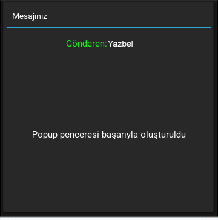
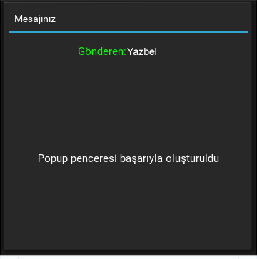

Pencere Araçları - 2¶
Pencere araçlarının birinci bölümünde, oldukça temel olan araçları inceledik. Bu bölümde, programın daha kullanışlı olmasını sağlayan, daha iyi bir görünüm imkanı veren, daha dinamik olan, daha ileri pencere araçlarını inceleyeceğiz.
Popup¶
Bazen program çalışırken beklenmedik bir işlem gerçekleştiğinde kullanıcıya bilgi vermek için bir mesaj kutusu gösterilir. Ya da bazen kullanıcının ek bilgi girebilmesi için bir form göstermek istenirse ekranda küçük bir dialog ekranı gösterilir. Bunların hepsini Popup pencereleri ile yapabiliriz. Kivy’de Popup pencereleri, üzerinde başka pencere araçlarını taşırlar. Örneğin ekranda mesaj göstermek istersek, Popup penceresinin içerisinde bir Label tanımlayabiliriz. Birazdan örneklerle beraber göreceğiz.
Popup pencerelerini oluşturmak için öncelikle kivy.uix.popup.Popup sınıfını import etmeliyiz. Sonra da mutlaka içerisinde yer alacak başka bir pencere aracını belirtmeliyiz. Şimdi bir butona tıklandığı zaman ekranda beliren Popup penceresi örneğini yapalım
#coding: utf-8
from kivy.app import App
from kivy.uix.popup import Popup
from kivy.uix.button import Button
from kivy.uix.label import Label
class Yazbel(App):
def build(self):
self.buton = Button(text = "Bir Mesajınız Var!")
self.buton.bind(on_release = self.mesaj)
return self.buton
def mesaj(self,instance = None):
popup = Popup(title = "Mesajınız",
content = Label(text = "Tebrikler! İlk Popup pencereyi başarıyla\noluşturdunuz.")
)
popup.open()
Yazbel().run()
Örneğimiz oldukça basit. Bir buton tanımladık ve tıklandığı zaman mesaj() metoduna geçiş yaptık. Bu metodumuzun içerisinde de bir tane Popup penceresi oluşturduk ve gerekli özelliklerini tanımladık. title, Popup penceresinin üst kısmında gösterilecek başlığını ifade eder. content ise, Popup penceresi içerisinde gösterilecek pencere aracını ifade eder. Bu pencere aracı sadece Label,Button gibi araçlar değil, bir pencere düzeni de olabilir.
#coding: utf-8
from kivy.app import App
from kivy.uix.popup import Popup
from kivy.uix.button import Button
from kivy.uix.label import Label
from kivy.uix.gridlayout import GridLayout
class Yazbel(App):
def build(self):
self.buton = Button(text = "Bir Mesajınız Var!")
self.buton.bind(on_release = self.mesaj)
return self.buton
def mesaj(self,instance = None):
govde = GridLayout(rows = 2,column = 1)
govde.add_widget(Label(text = "[color=#0f0]Gönderen:[/color]Yazbel",
markup = True,
size_hint_y = .2
))
govde.add_widget(Label(text = "Popup penceresi başarıyla oluşturuldu",
markup = True,
halign = "left"))
popup = Popup(title = "Mesajınız",content = govde)
popup.open()
Yazbel().run()
Ekran görüntüsü
 

Popup penceresini kapatmak istediğinizde, bunu yapmanın bir yolu olmadığını gördünüz değil mi? Evet, çünkü yazdığımız örnekte pencerenin kapatılmasını sağlayacak bir kod yazmadık. Peki bir Popup penceresini nasıl kapatabiliriz?
Bunun iki yolu var. Birincisi, Popup penceresi dışındaki bir alana basıldığı zaman pencerenin kapatılmasıdır. Yukarıdaki örneğimizde Popup penceremiz tam ekran olarak açıldığı için Popup dışındaki bir alana basamıyoruz. Bu yüzden popup penceremizin boyutlarını değiştirelim ve Popup dışındaki bir alana basıldığı zaman kapanması için auto_dismiss özelliğini aktif edelim
#coding: utf-8
from kivy.app import App
from kivy.uix.popup import Popup
from kivy.uix.button import Button
from kivy.uix.label import Label
from kivy.uix.gridlayout import GridLayout
class Yazbel(App):
def build(self):
self.buton = Button(text = "Bir Mesajınız Var!")
self.buton.bind(on_release = self.popAc)
return self.buton
def popAc(self,instance = None):
govde = GridLayout(rows = 2,column = 1)
govde.add_widget(Label(text = "[color=#0f0]Gönderen:[/color]Yazbel",
markup = True,
size_hint_y = .2
))
govde.add_widget(Label(text = "Popup penceresi\nbaşarıyla oluşturuldu.\nPencereyi kapatmak için\nalan dışında bir\nyere tıklayın",
markup = True,
halign = "left"))
# Penceremizin boyutlarını 200x200 olarak ayarladık
# size_hint = (None,None) yazmamızın sebebi
# otomatik orantılı boyutlandırmayı kapatmak
# ve pixel bazında boyutlandırmaya izin vermek içindir
popup = Popup(title = "Mesajınız",
content = govde,
auto_dismiss = True,
size_hint = (None,None),
size = (200,200))
popup.open()
Yazbel().run()
Programı çalıştırıp, Popup alanı dışındaki bir alana tıklarsanız Popup kapatılacaktır. Popup pencerelerini kapatmanın bir diğer yolu, dismiss() metodunu kullanmaktır. Bu sefer ki örneğimizde kullanıcı programdan çıkmak istesin ve biz de, evet - hayır dialog kutusu göstererek onaylayalım. Eğer kullanıcı hayır derse, Popup pencereyi kapatalım. Evet derse programdan çıkış yapalım.
#coding: utf-8
from kivy.app import App
from kivy.uix.popup import Popup
from kivy.uix.button import Button
from kivy.uix.label import Label
from kivy.uix.gridlayout import GridLayout
from kivy.uix.widget import Widget
from kivy.uix.boxlayout import BoxLayout
from kivy.core.window import Window
class Yazbel(App):
def build(self):
self.buton = Button(text = "Çıkış Yap")
self.buton.bind(on_release = self.cikis)
return self.buton
def cikis(self,instance = None):
govde = GridLayout(cols = 1)
govde.add_widget(Label(markup = True,text = "[color=#fff]Çıkmak istiyor musunuz?[/color]",size_hint_y = .1))
govde.add_widget(Widget(size_hint_y = .1))
buton = BoxLayout(size_hint_y = .2)
buton.add_widget(Button(text = "Evet",markup = True,size_hint_y = .7,on_release = self.kontrol))
buton.add_widget(Button(text = "Hayır",markup = True,size_hint_y = .7,on_release = self.kontrol))
govde.add_widget(buton)
# Penceremizin boyutlarını 200x200 olarak ayarladık
# size_hint = (None,None) yazmamızın sebebi
# otomatik orantılı boyutlandırmayı kapatmak
# ve pixel bazında boyutlandırmaya izin vermek içindir
self.popup = Popup(title = "Çıkış",
content = govde,
auto_dismiss = False,
size_hint = (None,None),
size = (200,200))
self.popup.open()
def kontrol(self,instance = None):
buton_yazisi = instance.text
if(buton_yazisi == "Evet"):
Window.close()
else:
self.popup.dismiss()
Yazbel().run()
Şimdi örneğimizi biraz inceleyelim. İlk olarak bir buton tanımladık ve tıklanıp bırakıldığı zaman(on_release) cikis() metoduna geçiş yapmasını sağladık. Bu metod içerisinde kullanıcıya çıkış yapmak istediğinden emin olup olmadığını soracağımız bir Popup penceresi göstereceğiz. Ve bu Popup penceresi içerisinde yer alacak gövdemizi tanımladık. Gövdemiz bir GridLayout ve biz bunun içerisine yazımızı ve butonlarımızı koyarak rahatlıkla Popup üzerinde gösterebiliriz.
İki adet buton ekledik. Evet ve Hayır butonları. Dikkat ederseniz ikisinin de olaylarına aynı metodu verdik. Yani iki butondan hangisi basılırsa basılsın kontrol() metoduna geçiş yapılacaktır. Biz de bu metod içerisinde tıklanan butonun yazısını ele aldık ve eğer “Evet” butonuna basıldıysa, Window sınıfının close() metodunu kullanarak programdan sağlıklı bir şekilde çıkış yaptık. Yazacağınız programlarda, programınızın içerisinde bir yerde programdan çıkış yapmak isterseniz, bu metodu kullanmanızı tavsiye ederim.
Sonra, eğer “Hayır” butonuna basıldıysa popup penceremizi dismiss() metodu yardımıyla kapattık. Böylece kodumuzu tamamlamış olduk.
Popup penceresine ait bazı özellikleri inceleyelim
seperator_color¶
Popup penceresi ile başlık arasında bulunan uzun çizginin rengini değiştirmek için kullanılır. Liste veya demet olarak değer alır. Varsayılan olarak [47 / 255., 167 / 255., 212 / 255., 1.] değerine sahiptir
separator_height¶
Uzun çizginin yüksekliğini ayarlayabilirsiniz. Varsayılan olarak 2dp dir.
title_align¶
Başlığın pozisyonunu ifade eder. “left”,”right”,”center” ve “justify” değerlerini alır
title_color¶
Aynı zamanda, başlığın rengini de değiştirebilirsiniz. Liste veya demet olarak değer alır. Varsayılan değeri [1, 1, 1, 1].
title_font¶
Başlığın yazı tipini belirtir
title_size¶
Anlaşıldığı gibi, başlığın boyutunu ifade eder. Varsayılan olarak 14sp dir.
Önemli Not
Sorularınızı yorumlarda dile getirmek yerine Yazbel Forumunda sorarsanız çok daha hızlı cevap alabilirsiniz.Belgelerdeki bir hata veya eksiği dile getirecekseniz lütfen yorumları kullanmak yerine Github'da bir konu (issue) açın.
Eğer yazdığınız yorum içinde kod kullanacaksanız kodlarınızı <pre><code> etiketleri içine alın. Örneğin:
<pre><code class="python">
print("Merhaba Dünya!")
</code></pre>